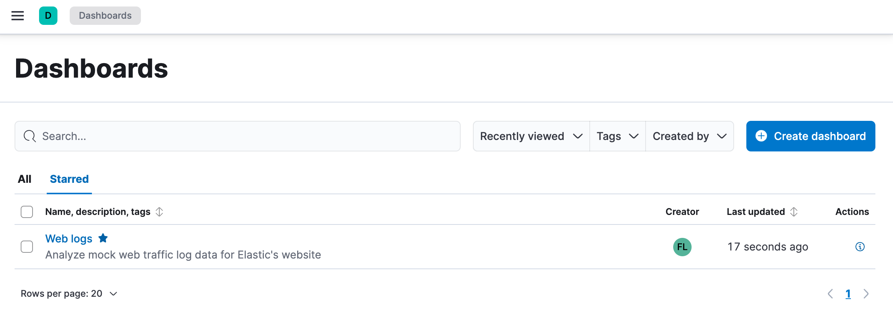
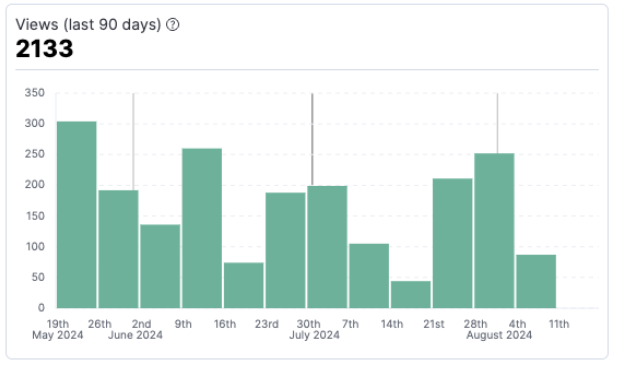

Manage dashboards
editBrowse dashboards
editWhen looking for specific dashboards to open or share, several actions are available to you to help you find them quicker.
Search by name, description, or tag
On your list of Dashboards, use the search field to look for specific terms. These terms will be highlighted in real time in your dashboard list to help you locate what’s relevant to you.
Filter by tag
When creating or editing dashboards, you can assign them tags that allow you to retrieve them faster in the future.
On your dashboard list, you have an option that lets you filter dashboards in or out based on their tags.
Filter by creator
The user who created or imported a dashboard is identified as the dashboard’s creator. This information is visible right from the dashboard list, and you can filter that list by creator.
Similarly, managed dashboards created by integrations are identified as created by Elastic.
The creator information is only available for dashboards created on or after version 8.14. For dashboards from previous versions, the creator is empty.
Sort by name or last update date
By default, your most recently viewed dashboards are displayed first. You can instead sort the dashboard list based on their name or their last update date.
Keep track of your favorite dashboards
editYou can mark any dashboards as favorite, using the ✩ star icon.
All dashboards marked as favorite are gathered in the Starred tab so you can find them quickly.
The list of starred dashboards is personal. Dashboards marked as favorite by other users only appear for those users.

View dashboard usage
editYou can check how much a dashboard is being used from its details, with a graph showing the total number of views during the last 90 days.
You can access a dashboard details by clicking its associated information icon from your list of dashboards.
